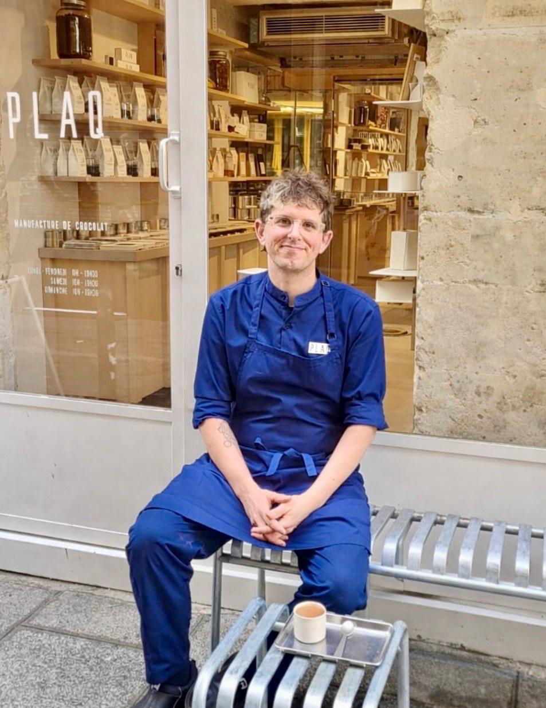
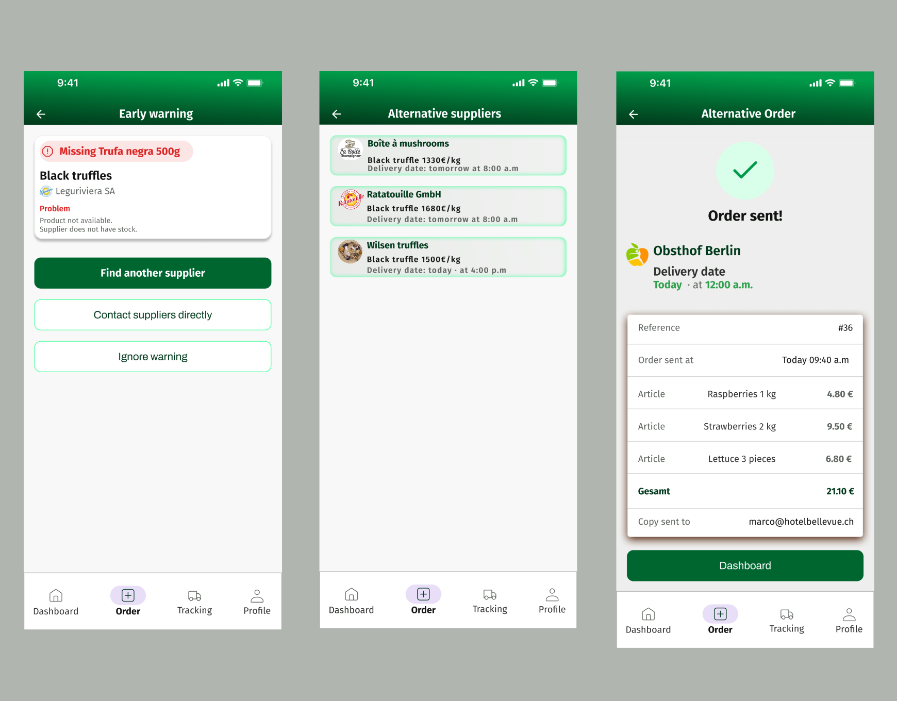
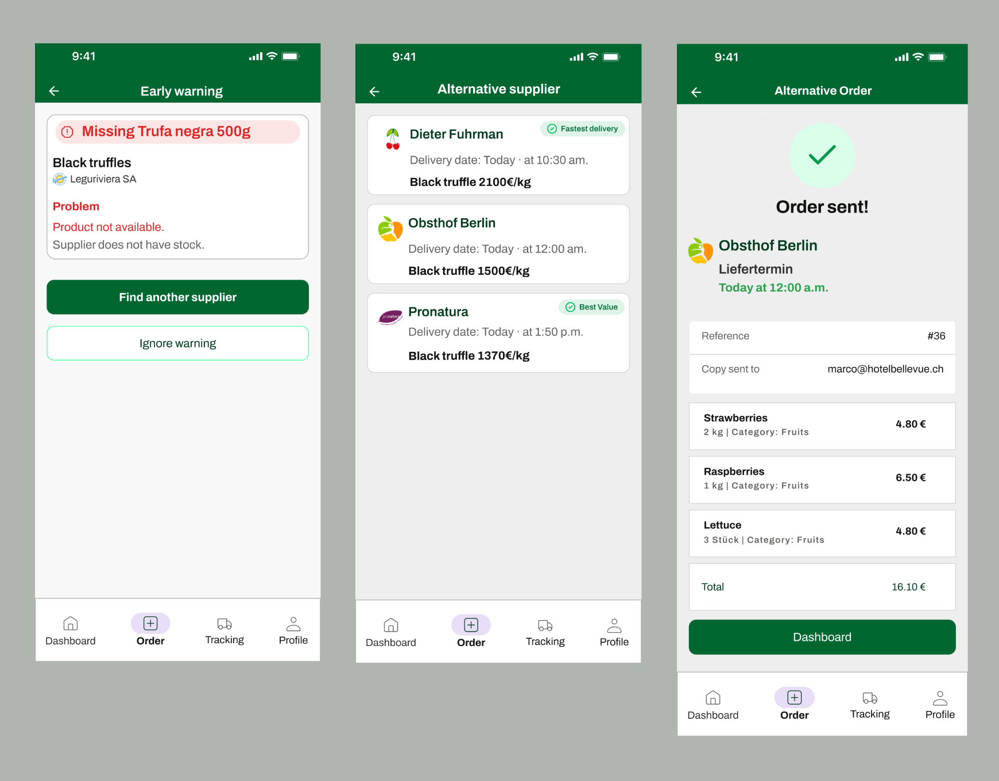
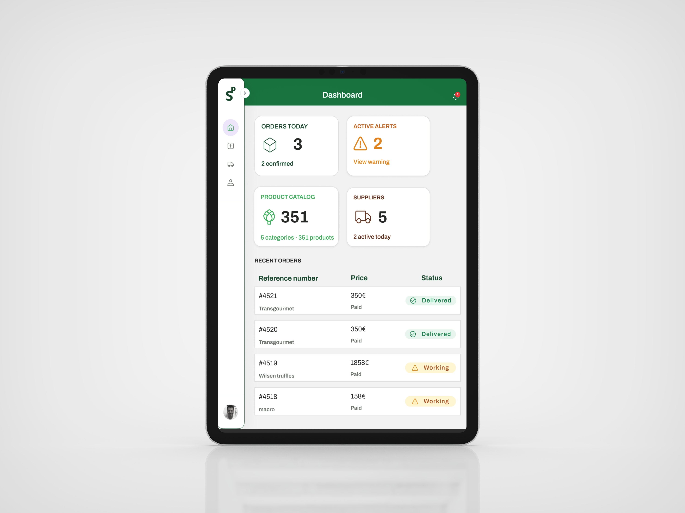

Supplier issues
discovered almost too late.
The problem is the agony, the fear of not knowing whether the supplier will arrive on time with the necessary products and whether they match what was ordered. At that moment, service is already at risk. There is very little time left to react.
Deep Qualitative
Research
10 Top Executive Chefs with +10 years experience and biggest Fruit & Vegetable suppliers in Switzerland
Chefs from Germany, Uruguay, France, Switzerland and Spain
of the chefs surveyed are directly affected by late deliveries
"An early warning system for delays or supplier problems would be a good solution to this problem, as it would allow us to respond sooner and salvage the service."
"Then you often have to run around to make sure they deliver the product on time and in good condition, or you have to work with other suppliers, but it's always a headache when that happens to you."
"If the product doesn't meet the required standard, I immediately feel frustrated and concerned about the operational side of things. As a chef, I am responsible for the final quality."
The key
design question.
The user persona and the ten interviews converged into a single question. This became the filter for every product and design decision that followed.
How might we help chefs in gastronomy detect supply disruptions early so they can react before service is affected?
Three decisions that
shaped the product
The interviews became the foundation for every product decision. Hearing the same operational tensions across multiple kitchens helped separate assumptions from real workflow problems.
What the test
actually revealed
"Even though it was in another language, you could still figure out what to do. In fact, it's super clear — it's not at all hard to understand how it works. There's nothing superfluous; it simply provides the necessary information."

Valentin Chappuis · Pastry Chef, Vegan Restaurant Aujourd'hui Demain, Paris, France
From generic labels
to clear language

Before: first usability test
Before the test
- Generic status terms: ambiguous labels that created hesitation at decision points
- Inconsistent labels: the same action named differently across screens
- Unclear CTAs: testers could not determine the consequence of an action before taking it
- Flat visual hierarchy: primary and secondary actions carried equal visual weight

After: revised interface
After the iteration
- Clear status badges: each state communicates exactly what it means with no interpretation needed
- Unambiguous action labels: consistent terminology across every screen and state
- Visible hierarchy: primary actions are visually dominant, secondary actions recede
- Scannable language: every label written for a chef with three seconds and high stress
Three screens.
One clear flow.
Supply Pro focuses on a single operational moment: the gap between placing an order and receiving a delivery. From the first tap to a confirmed decision in under three minutes. Supply Pro is designed for shared kitchen use. While fully responsive, the iPad is the primary device — always accessible, always visible to the whole team.
The dashboard shows what is happening today at a glance. Open orders, confirmed deliveries, active alerts. The information architecture follows the F-pattern: the most critical information top left, status information to the right. A chef has three seconds. Everything must be scannable without reading.

The core of Supply Pro. When a supplier reports a problem, the warning appears proactively before the chef has to look for it. The screen shows which product is affected, what the problem is, and what options are available. The chef confirms. They do not decide from nothing.
When a product is unavailable, the system automatically suggests a replacement. Price, delivery time, and availability visible at a glance. The chef chooses, the system sends. No phone call, no WhatsApp, no manual documentation.

See it in
motion.
One tool per
phase of the process
AI was not a single tool. It was a system of specialized tools — one matched to each phase of the Design Thinking process.
Measuring what
actually matters
These indicators validate that Supply Pro is solving the right problem, and demonstrate how quickly it is doing so.
The next three
versions
The long-term goal: Supply Pro becomes the operational memory of a professional kitchen.